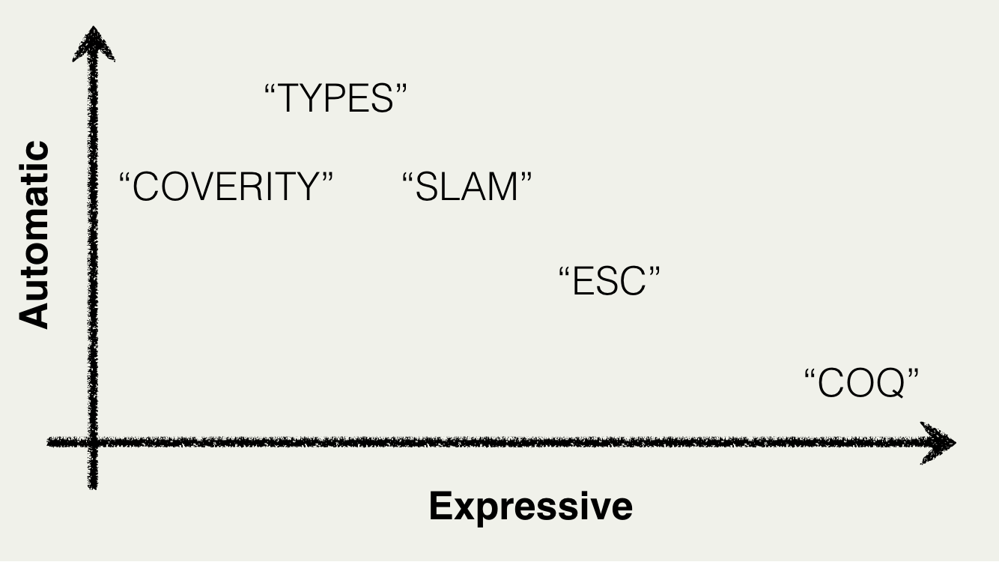
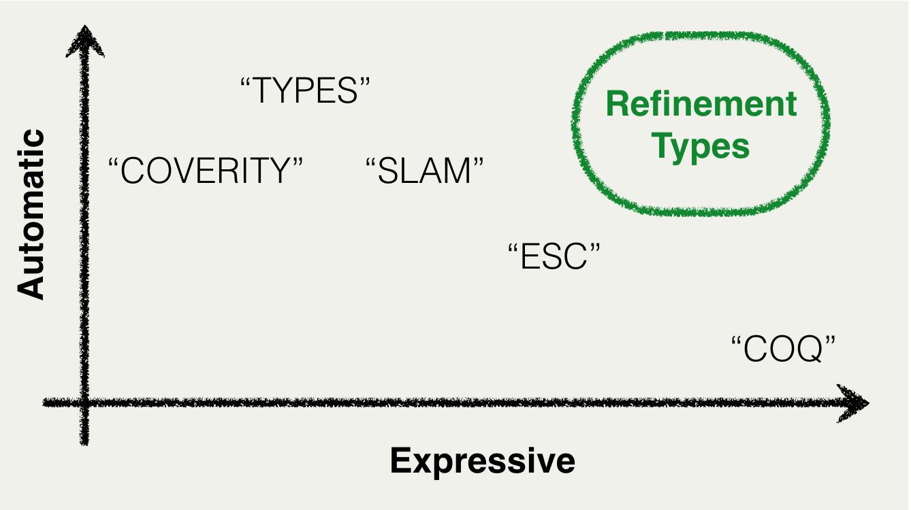

LiquidHaskell
LiquidHaskell
Diverse Code Bases
10KLoc / 56 Modules
LiquidHaskell
Memory Safety
Totality
Termination
Functional Correctness
Inference is Crucial
Evaluation

Specifications: 1 / 10 LOC (ok)
Compile Time: 1s / 10 LOC (not ok!)
Recap: Refinement Types
Expressive
Verify program specific properties via domain specific analysis
Automatic
Rapid feedback to influence design, not only post-facto validation
Recap: Refinement Types

Recap: Refinement Types

Recap: Refinement Types
SMT-Automated Dependent Typing
| Properties: | Predicates + Types |
| Proofs: | SMT Solvers + Subtyping |
| Inference: | Abstr. Interp. + Hindley-Milner |
Many Friends, Many Directions
| ATS | BU |
| Catalyst | Purdue |
| DML/Stardust | CMU/UBC |
| F7/F* | MSR/INRIA |
| RefinedRacket | IU |
| Synquid | MIT |